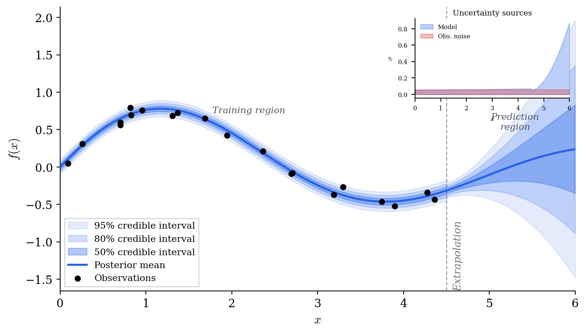

Sensitivity Analysis
I started by running local and global sensitivity analyses to figure out which parameters actually influence model output, so calibration effort could be focused where it counts.
NSF-Funded Research
Mathematical models of physical and biological systems are, at best, approximations. The real question is not just "what does the model predict?" but "how much should we trust that prediction, and where does the model break down?" In this NSF-funded project, I developed Bayesian methods for both: propagating uncertainty through model parameters to build reliable prediction intervals, and detecting when the gap between model and data signals a structural problem rather than just noise.
I started by running local and global sensitivity analyses to figure out which parameters actually influence model output, so calibration effort could be focused where it counts.
The classical starting point: find the parameter values that make the model best match observed data, using well-defined objective functions and optimization.
When a single best-fit is not enough, we need the full posterior distribution. I implemented Markov chain Monte Carlo methods to explore the parameter space and map out what is plausible.
For problems where a full Bayesian posterior is not needed, I used confidence and prediction intervals from classical statistical theory as a faster alternative.
When the real simulator takes hours to run, I built fast approximations that preserve the important input-output relationships. This made MCMC and sensitivity analysis tractable.
The hardest question: is the mismatch between model and data caused by uncertain parameters, or is the model itself structurally wrong? I developed diagnostics to help tell the difference.
Everything starts from a model \(y = \mathcal{M}(\theta) + \varepsilon\) and some prior belief about the parameters. Bayes' theorem gives the posterior:
The posterior distribution tells us the most likely parameter values, how uncertain we are about them, and how that uncertainty propagates into predictions.
When model-data mismatch exceeds what parameter uncertainty can explain, we introduce a discrepancy function \(\delta(x)\):
If \(\delta\) is negligibly small, the model structure is adequate. If \(\delta\) shows systematic patterns, the model itself needs revision, not just its parameters.
For most real problems, we draw posterior samples using Metropolis-Hastings, accepting proposals with probability:
Sensitivity analysis results directly inform calibration. Screened-out parameters get fixed, focusing MCMC on the dimensions that matter.
NumPy, SciPy, and custom MCMC implementations for Bayesian calibration, with Matplotlib for diagnostic plots.
Surrogate modeling and discrepancy analysis extend the workflow past parameter estimation toward model criticism.

The research code is organized across two repositories: the core UQ modules and Bayesian statistics coursework that informed the methodology.